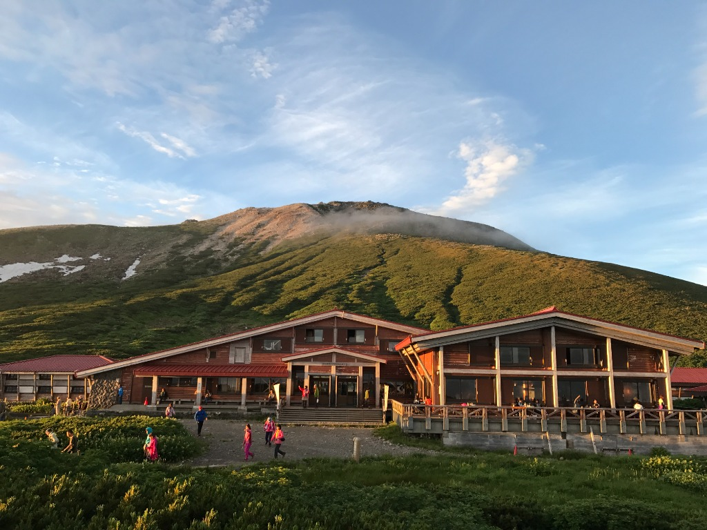
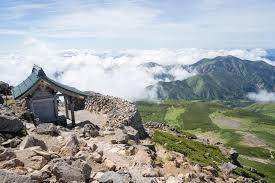

3つの「最高」が待つ、白山ルート。

標高2,450mの極上生ビール
今回のメインイベント。室堂（山小屋）に到着したら、まずは生ビールで乾杯。絶景に囲まれながら、仲間と語り合う時間は最高の贅沢です。

天空のエンターテイメント
晴れていれば、地平線に沈む真っ赤な夕日、夜には満天の星空と流れ星。翌朝は雲海から昇る神々しい御来光が待っています。

登頂、そして下山後の「ととのい」
早朝にアタックをかけ、無事に登頂。下山後は、疲れた身体を癒す最高のサウナと温泉（＆もう一杯のビール）がセットになっています。